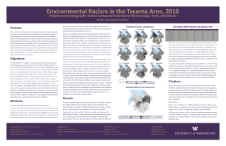
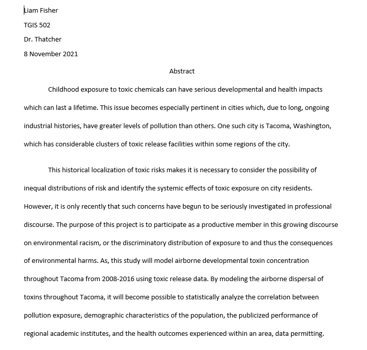

Undergraduate Work
While studying Sustainable Urban Development, I also participated in the Geographic Information Systems certificate program. My final project for that program was to analyze Tacoma, Washington and the surrounding area for signs of environmental racism using ESRI Arcmap. Click the image to learn more.

Fall 2021
Throughout the first quarter of the MSGT program, I've been learning the basis of web mapping and, as a consequence of that, web design in general. I've also been learning a lot about the intellectual movements commenting data analytics and the tech industry in general. Click the image to learn more.
Winter 2022
During Winter 2022 I'll be learning to develop geospatial applications for mobile devices, how to use the programming language Python, and developing a formal proposal for a project more deeply and critically examining environmental racism in Tacoma Washington. Click the image to learn more.

Capstone Project
I'll be conducting a project that goes beyond just analyzing differences in the distribution of toxic exposure in Tacoma to complete this program. In particular, I'll be exploring the relationship between pollution exposure, health outcomes, and academic performance spatially. Click the image to learn more.
My goal as a professional is to contribute to the wellbeing and longevity of society by working to promote a more just and more sustainable economy. Whether working to shed light on and guide intervention in the unjust concentration of environmental risks on the most vulnerable communities, working to plan more livable, decarbonized cities, or doing analyses to guide clean energy development, it is my hope to leave the world better than I found it.
- Environmental Justice
- Social Service Planning
- Anti-Eviction Mapping
- Green Energy Planning
- Transit Planning
-

AA + Sustainability Distinction Pathway
Tacoma Community College, 2016-2018
-

BA in Sustainable Urban Development + Certificate in GIS
University of Washington Tacoma, 2018-2020
-
MS in Geospatial Technologies
University of Washington Tacoma, 2021-
© Liam Fisher. All rights reserved. | Design:
HTML5 UP with modifications by Liam Fisher